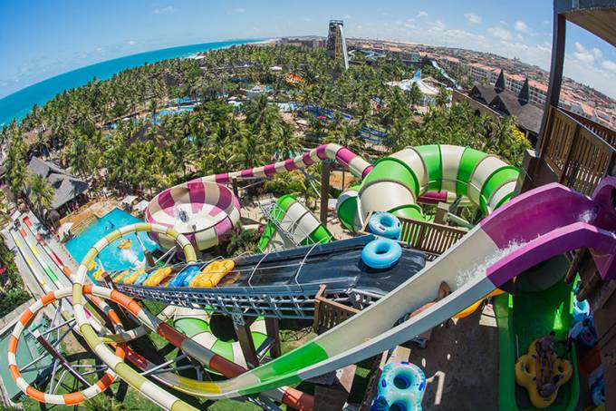
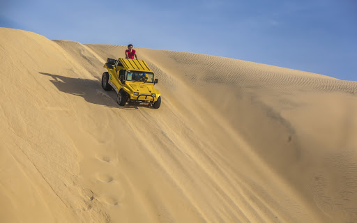

Informações
Fortaleza é um município brasileiro, capital do estado do Ceará, situado na região Nordeste do país. Distante 2 285 km de Brasília, capital federal, a cidade desenvolveu-se às margens do riacho Pajeú, e sua toponímia é uma alusão ao Forte Schoonenborch, o qual deu origem ao município, construído pelos holandeses durante sua segunda permanência no local, entre 1649 e 1654. O lema de Fortaleza, presente em seu brasão, é a palavra em latim Fortitudine, que, em português, significa "força, valor, coragem".

Parque Aquatico do Beach Park.

Passeio de Bugue nas Dunas da Praia de Cumbuco.
| Onde Ir | Localidade | Atração | Qtd. Pessoas | Custo Médio | ||||||||||
|---|---|---|---|---|---|---|---|---|---|---|---|---|---|---|
| Aquiraz | Praia do Porto da Dunas | Beach Park | 2 | R$ 250,00 | ||||||||||
| Cumbuco | Praia de Cumbuco | Passeio de Bugue | 2 | R$ 150,00 | ||||||||||